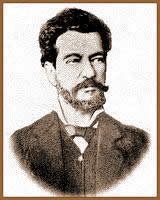

Bernardo Joaquim da Silva Guimarães,
nasceu em Ouro Preto, Minas Gerais, em 15 de agosto de 1825. Filho
de João Joaquim da Silva Guimarães e Constança
Beatriz de Oliveira, foi magistrado, jornalista, professor, romancista
e poeta. É o patrono da Cadeira nº 5 da "Academia
Brasileira de Letras", por escolha de Raimundo Correia.
Dos
seus quatro anos, até um momento da adolescência
não fixado pelos biógrafos, viveu em Uberaba e Campo
Belo, impregnando-se das paisagens que descreveria com predileção
nos seus romances. Antes dos 17 anos, estava de volta a Ouro Preto,
onde terminou os preparatórios, matriculando-se tardiamente,
em 1847, na Faculdade de Direito de São Paulo, onde se
tornou amigo íntimo e inseparável de Álvares
de Azevedo e Aureliano Lessa, com os quais chegou a projetar
a publicação de uma obra que se chamaria Três
Liras. Fundaram os três, com outros estudantes, a "Sociedade
Epicuréia", a que se atribuíram "coisas
fantás-ticas", que ganharam fama no meio paulistano.
Sempre mau estudante, se bacharelou em 2ª época no
começo de 1852, depois de um qüinqüênio
ruidoso de troças, patuscadas, orgias e irreverência.
Já então o distinguiam pela sua indisciplina, pelas
alternativas de bom humor e melancolia, pelo coração
bondoso e completa generosidade. Juiz municipal de Catalão,
Província de Goiás, em 1852-1854 e 1861-1863, foi,
de permeio, jornalista no Rio, de 1858 a 1860 ou 61.
Magistrado descuidado e humano, promoveu no segundo
período de judicatura um júri sumário para
libertar os presos, pessimamente instalados, e, intervindo motivos
de conflito com o presidente da província, sofreu processo,
do qual saiu triunfante. Depois de nova estadia no Rio, fixou-se
a partir de 1866 na cidade natal, onde casou no ano seguinte e
foi nomeado professor de retórica e poética no Liceu
Mineiro. Casou-se no ano seguinte com Teresa Maria Gomes, tendo
posteriormente, oito filhos. Uma das duas filhas foi Constança,
falecida aos 17 anos, quando noiva de seu primo, o poeta Alphonsus
de Guimaraens, que a imortalizou na literatura como a que
"se morreu fulgente e fria".
Extinta a cadeira, foi nomeado em 1873, professor
de latim e francês em Queluz, atual Lafayette, onde morou
uns poucos anos. Também esta cadeira foi extinta, e Basílio
de Magalhães sugere que o motivo deve ter sido, em ambos
os casos, ineficácia e pouca assiduidade do poeta. Em 1875
publicou o romance que melhor o situaria na campanha abolicionista
e viria a ser a mais popular das suas obras: A Escrava Isaura.
Dedicando-se inteiramente à literatura, escreveu ainda
quatro romances e mais duas coletâneas de versos. A visita
de Dom Pedro II à Minas Gerais, em 1881, deu motivo a que
o Imperador prestasse expressiva homenagem a Bernardo Guimarães,
a quem admirava. Voltando a Ouro Preto, ali viveu até a
morte, em 10 de março de 1884.
Embora tenha começado
a escrever ficção nos fins do decênio de 50,
e tenha feito poesias até os últimos anos, como
qualidade a sua melhor produção poética vai
até o decênio de 1860; a partir daí, realiza-se
de preferência na ficção. Estreando com os
Cantos da Solidão em 1852, reúne-os com
outros em 1865 nas Poesias. De 1866 é a publicação
parcelada d'O Ermitão do Muquém (posto
em livro em 69, mas redigido em 58), seguido por Lendas e
Romances, 1871; O Garimpeiro, 1872; Lendas e
tradições da Província de Minas Gerais
(incluindo A Filha do Fazendeiro) e O Seminarista,
1872; O Indio Afonso, 1873; Maurício,
1877; A Ilha Maldita e O Pão de Ouro,
1879; Rosaura, a Enjeitada, 1883. Publicara
mais duas coletâneas de versos: Novas Poesias,
1876, e Folhas de Outono, 1883. Postumamente surgiram
o romance O Bandido do Rio das Mortes, 1904, e o drama
A Voz do Pajé, 1914. Deve-se registrar além
disso, uma saborosa produção de poesia obscena,
cuja maioria se teria perdido, sendo algumas recolhidas em folheto.
Por Spectrum
Obras
Disponíveis:
Contos (Downloads)